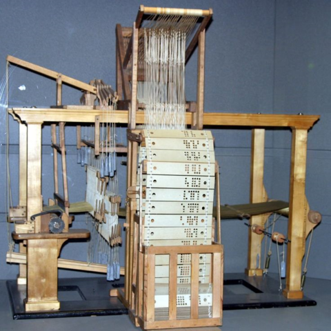

Linha do tempo
Primeira maquina programável
Em 1801, sendo base para o que aconteceria mais tarde, o inventor francês Joseph-Marie Jacquard, criou a primeira máquina mecânica programável do mundo. O aparelho era uma espécie de tear que controlava a confecção dos tecidos através de cartões de madeira perfurados. Os primeiros computadores usavam cartões perfurados semelhantes..

Primeira máquina analítica
Já em 1821, 20 anos depois, o matemático inglês Charles Babbage criou uma máquina analítica que, a grosso modo, é comparada com o computador atual com memória e programas. Graças ao seu invento, Babbage é considerado por alguns estudiosos como o “pai da informática”.
Primeira programadora de computador do mundo
Um computador é composto por inúmeros componentes, não é só um aparelho eletrônico, para ele ser um dispositivo considerado de fato computador, ele precisa, por exemplo, de uma série de programações. Dito isso, em 1848, Ada Lovelace, matemática inglesa, escreveu o primeiro software do mundo. Segundo registros, Lovelace, juntou cálculos da máquina inventada por Babbage e com isso, basicamente criou um algoritmo, que consequentemente, virou um programa de computador..
Entrada de informação no computador
Um ponto importante a ser ressaltado é: quando e quem deu início a entrada de informações aos computadores. Em 1890, Herman Hollerith projeta um sistema de cartão perfurado para ajudar a calcular o Censo dos EUA daquele ano. Para quem não sabe, os cartões perfurados, eram instrumentos essenciais para a entrada de informação para os computadores da época. Com a sua invenção naquele ano, a máquina poupou o governo de vários anos de cálculos. Hollerith, também é um dos fundadores da IBM, precursor do processamento de dados. O computador, tal qual conhecemos hoje, passou por diversas transformações e foi se aperfeiçoando ao longo do tempo, acompanhando o avanço das áreas da matemática, engenharia, eletrônica. É por isso que não existe somente um inventor. Outro detalhe importante: no meio dessas evoluções, hoje, a história do computador é divida em quatro períodos.
Primeira geração de computadores
Os primeiros computadores com quase todos os componentes internos presentes, foram inventados já nos de 1940. A geração inicial funcionava por circuitos e válvulas eletrônicas. Possuíam o uso restrito, além de serem imensos e consumirem muita energia.
Segunda e terceira geração de computadores
Ao passar dos anos, algumas coisas evoluíram nos aparelhos, mas seu tamanho exacerbado continuava igual. Entretanto, nessa nova geração que vai do início dos anos 1950 até metade dos anos 1960, os PCs funcionavam por meio de transistores, que substituíram as válvulas maiores e mais lentas. Nessa época, houve também um grande passo, as máquinas começaram a ser espalhar para o uso comercial. Importante: em 1958, Jack Kilby e Robert Noyce revelam o circuito integrado, conhecido como chip de computador. Já entre os anos de 1965 até aproximadamente 1975, é considerado o início da 3ª geração dos aparelhos. Nessa época, os dispositivos já começaram a mudar de formato e não eram mais tão gigantes. A partir desse período, eles funcionavam por circuitos integrados, inventado anos antes, que veio para substituir os transistores, por isso o tamanho mudou. E graças a esses chips e integração de circuitos, os PCs começaram a ser disponibilizados para uso pessoal.
Primeiro mouse da história
Para quem não sabe, o primeiro mouse da história foi inventado entre os anos 1964 a 1968, por Douglas Engelbart, a partir de uma caixa de madeira com um botão na parte superior. Além do mouse, Engelbart é conhecido por ter sido pioneiro na interação humana com as máquinas. Ele é conhecido também como inventor do GUI (interface gráfica de usuário). Isso marcou o desenvolvimento do computador para acadêmicos, com uma tecnologia mais acessível ao público
Quarta e última geração
A partir de 1976, com o desenvolvimento da tecnologia da informação, os computadores diminuíram de tamanho, aumentam a velocidade e capacidade de processamento de dados –a essa altura já existiam inúmeros componentes para isso. Por exemplo, nesse mesmo ano, Steve Wozniak, revelava o Apple I, o primeiro computador com uma placa de circuito único e ROM da empresa. A partir dos anos 1990, houve uma grande evolução entres os aparelhos e diversas marcas deram início ao que conhecemos e usamos hoje. Entre as evoluções, estão os surgimentos de softwares integrados, e a partir da virada do milênio, começam a surgir os computadores de mão. Ou seja, os smartphones, laptops, iPod, iPad e tablets, que incluem conexão móvel com navegação na web.